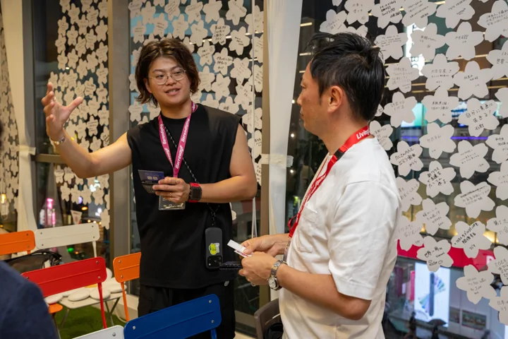
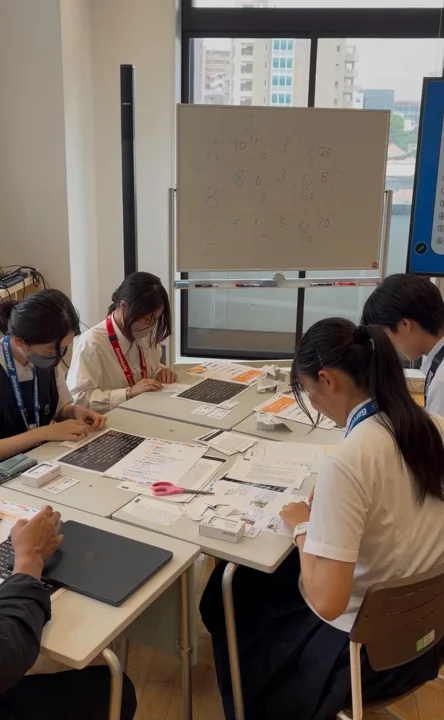
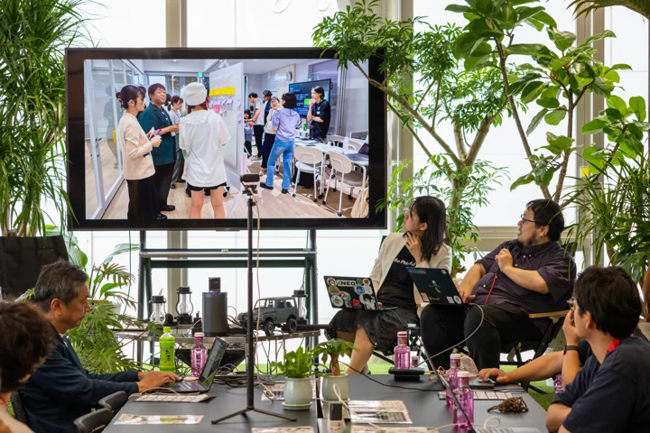
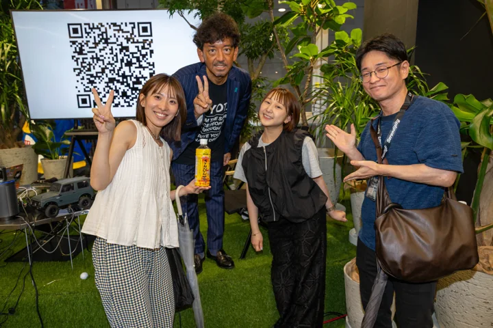
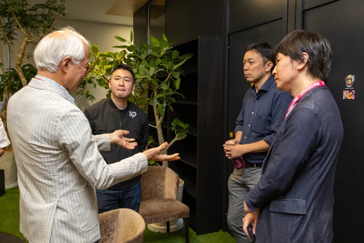
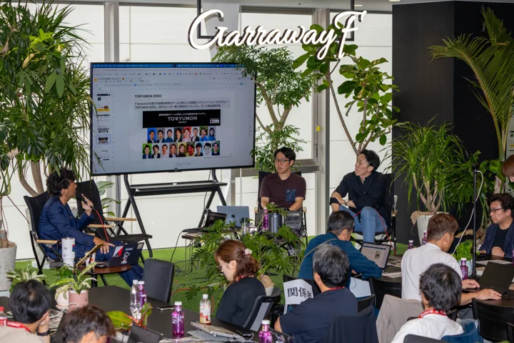

Notes
from the field.
日々の対話から、次の場づくりへ。
現場で考えていること、試していること。
Serendipityの仕事をつくる視点を、少しずつ。

01COMMUNITY / 現場の視点
受付は、ただの受付ではない。
最初の会話から、関係がはじまる。
READ STORY ↗
02TEAM / 現場の視点
自分で考え、動けるチームを育てる。
役割と判断基準を、みんなのものに。
READ STORY ↗
03PROJECT / 現場の視点
イベントの後に、何を残すか。
出会いの続きを、設計する。
READ STORY ↗
04PEOPLE / 現場の視点
「女将」という役割について。
人を見つめ、挑戦を支える。
READ STORY ↗
05PLACE DESIGN / 現場の視点
ルールとホスピタリティを、両立する。
誰もが安心していられる場のために。
READ STORY ↗
06CO-CREATION / 現場の視点
実証実験を、日常の中へ。
使う人の声を、次の改善につなげる。
READ STORY ↗